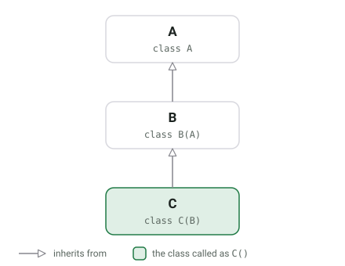
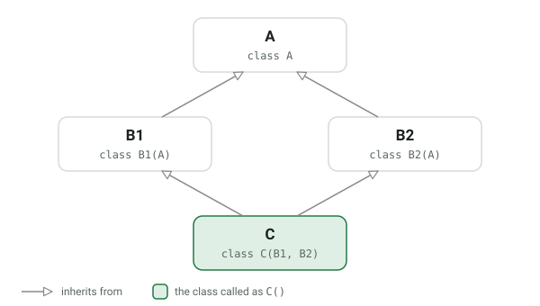

Python has a built-in function called super().
It might behave differently from what you thought.
Single Inheritance
As a first simple example, consider this script:
class A:
def __init__(self):
print("A")
super().__init__()
class B(A):
def __init__(self):
print("B")
super().__init__()
class C(B):
def __init__(self):
print("C")
super().__init__()
C()
This prints:
C
B
A
This is simple because every class inherits from exactly one other class and the inheritance tree looks like this:
{kind=link}

Multiple Inheritance
Python supports multiple inheritance. This means classes can inherit from arbitrarily many classes.
Let's start with a simple example of how super works here:
class A:
def __init__(self):
print("A")
super().__init__()
class B1(A):
def __init__(self):
print("B1")
super().__init__()
class B2(A):
def __init__(self):
print("B2")
super().__init__()
class C(B1, B2):
def __init__(self):
print("C")
super().__init__()
C()
The inheritance tree looks like this:
{kind=link}

The output of this script is:
C
B1
B2
A
Still expected, right? Basically going deeper and left to right.
Multiple Inheritance: Linearization
Where the mental model might break is with the following example. The
inheritance tree is still the same. However, within B1 I don't call super
anymore. Which output would you expect?
class A:
def __init__(self):
print("A")
super().__init__()
class B1(A):
def __init__(self):
print("B1")
class B2(A):
def __init__(self):
print("B2")
super().__init__()
class C(B1, B2):
def __init__(self):
print("C")
super().__init__()
C()
The received output is:
C
B1
Now, why does it print neither B2 nor A? After all, C still inherits from
B2 and B2 still calls super which would point to A, right?
The reason is that the method resolution order is:
>>> print(C.__mro__)
(<class '__main__.C'>, <class '__main__.B1'>, <class '__main__.B2'>, <class '__main__.A'>, <class 'object'>)
This means that super searches first in B1, then B2, then A and then object for
the __init__ function. If it is found in one of them, it just executes that
one. It does not continue searching.
Super is a call-next-method. It calls the next method in the method resolution order. And it is cooperative: If one in the line does not call super, then the line ends.
See also
- Stack Overflow:
- Callisto: How does Python's super() work with multiple inheritance?, 2010.
- Mizipzor: Understanding Python super() with
__init__()methods, 2009.
- Raymond Hettinger: Super considered super! at PyCon on YouTube, 2015.
- Raymond Hettinger: Python’s super() considered super!, 2011.